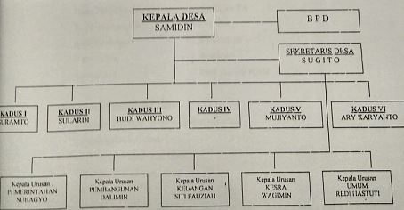

Pemerintahan & Kelembagaan Desa Palur
Visi & Misi, Susunan Aparatur Pemerintahan, Tugas dan Fungsi, serta Sinergi Lembaga Kemasyarakatan
Visi & Misi Desa Palur
Arah kebijakan dan pedoman pengabdian aparatur Pemerintah Desa Palur dalam melayani seluruh masyarakat.
Visi Utama:
"Terwujudnya Pemerintahan Desa Palur yang Jujur dan Berwibawa dengan Mengedepankan Pengabdian dan Pelayanan pada Masyarakat."
Visi ini menegaskan komitmen seluruh jajaran pamong desa untuk menempatkan kepentingan masyarakat di atas segalanya melalui tata kelola yang bersih, transparan, dan berkeadilan.
Tujuh Misi Pokok:
-
Peningkatan Kinerja Perangkat: Meningkatkan kinerja perangkat desa dengan pendekatan kebersamaan dan kekeluargaan yang penuh tanggung jawab.
-
Pelayanan Profesional: Memberikan pelayanan administrasi dan perizinan kepada seluruh lapisan masyarakat secara cepat, ramah, dan profesional.
-
Pembangunan Berkesinambungan & Transparan: Meningkatkan pembangunan fisik dan non-fisik secara bertahap yang bersumber dari APBDes, bantuan pemerintah, maupun swadaya masyarakat secara terbuka dan dapat dipertanggungjawabkan.
-
Kerukunan Antarumat Beragama: Menciptakan keharmonisan, toleransi, dan kerukunan hidup antarumat beragama di lingkungan warga.
-
Kemitraan Harmonis dengan BPD: Menjalin hubungan kerja sama kemitraan yang sinergis antara Pemerintah Desa dan Badan Permusyawaratan Desa (BPD).
-
Pemberdayaan Lembaga Kemasyarakatan: Menumbuhkembangkan aspirasi dan partisipasi warga melalui RT, RW, LPM, PKK, dan Karang Taruna lewat komunikasi timbal balik yang konstruktif.
-
Musyawarah Mufakat: Senantiasa mengedepankan musyawarah mufakat dalam memecahkan setiap permasalahan di lingkungan desa.
Sugito, S.Pd.
Kepala Desa Palur, Kec. Mojolaban
SK Terverifikasi Bupati SukoharjoLegalitas Jabatan & Catatan Riwayat Administratif
Pada dokumen arsip monografi dan bagan struktur fisik tahun 2017 terdahulu, Kepala Desa dijabat oleh Bapak Samidin dan Sekretaris Desa dijabat oleh Bapak Sugito. Seiring berjalannya suksesi kepemimpinan desa, Bapak Sugito, S.Pd. terpilih menjadi Kepala Desa definitif dan saat ini secara sah memimpin Pemerintah Desa Palur dengan perpanjangan masa jabatan resmi dari Bupati Sukoharjo.
Struktur Organisasi Pemerintah Desa
Susunan bagan dan aparatur Pemerintah Desa Palur yang bertugas menjalankan roda pelayanan dan pembangunan.


Klik untuk memperbesar bagan struktur organisasi asli.Susunan Aparatur Perangkat Desa
Bagan Kantor Desa| Jabatan | Nama Pejabat / Perangkat | Keterangan |
|---|---|---|
| Kepala Desa | Sugito, S.Pd. | Definitif (SK 2024) |
| Sekretaris Desa | Sugito (Terdahulu) | Penyesuaian Tata Usaha |
| Kaur Pemerintahan | Subagyo | Pamong Desa |
| Kaur Pembangunan | Dalimin | Pamong Desa |
| Kaur Kesejahteraan | Siti Fauziah | Pamong Desa |
| Kaur Kesra | Wagimin | Pamong Desa |
| Kaur Umum | Redi Hastuti | Pamong Desa |
| Kepala Dusun I | Suramto | Wilayah Dusun 1 |
| Kepala Dusun II | Sulardi | Wilayah Dusun 2 |
| Kepala Dusun III | Budi Wahyono | Wilayah Dusun 3 |
| Kepala Dusun IV | (Formasi Kadus IV) | Wilayah Dusun 4 |
| Kepala Dusun V | Mujiyanto | Wilayah Dusun 5 |
| Kepala Dusun VI | Ary Karyanto | Wilayah Dusun 6 |
Tugas & Fungsi Pemerintahan
Uraian tugas pokok dan wewenang perangkat desa dalam penyelenggaraan tata kelola pemerintahan desa.
1. Kepala Desa
Menyelenggarakan urusan pemerintahan, pembangunan wilayah, dan pembinaan kemasyarakatan. Wewenang utama Kepala Desa meliputi:
- Memimpin penyelenggaraan pemerintahan desa berdasarkan kebijakan bersama BPD.
- Mengajukan, membahas, dan menetapkan Peraturan Desa (Perdes) bersama BPD.
- Menyusun APBDes (Anggaran Pendapatan dan Belanja Desa) secara partisipatif dan transparan.
- Membina perekonomian warga, memelihara ketertiban, dan mendamaikan perselisihan masyarakat.
- Mewakili desa di dalam dan di luar pengadilan sesuai ketentuan perundang-undangan.
2. Sekretaris Desa
Memimpin sekretariat desa dalam mengelola administrasi perkantoran, keuangan, dan korespondensi. Tugas dan fungsi Sekdes:
- Pelaksanaan korespondensi surat-menyurat resmi, kearsipan, dan pelaporan berkala.
- Mengoordinasikan pelaksanaan tugas operasional yang dilaksanakan aparatur urusan teknis.
- Penyusunan data monografi, perencanaan anggaran keuangan, dan laporan pertanggungjawaban.
- Memberikan pelayanan ketatausahaan langsung kepada masyarakat dan Kepala Desa.
3. Kaur Pemerintahan
Membantu penyusunan program administrasi kependudukan dan catatan sipil, pengumpulan data pertanahan (agraria/bengkok), penyusunan buku monografi desa, serta ketertiban umum.
4. Kaur Pembangunan
Menyusun rencana pembangunan fisik dan prasarana lingkungan, inventarisasi proyek swadaya warga, pengawasan pekerjaan infrastruktur jalan/irigasi desa, serta pembinaan kader pembangunan.
5. Kaur Umum & Kadus
Kaur Umum mengelola inventarisasi perlengkapan dan logistik kantor desa. Kepala Dusun (Kadus) bertindak sebagai unsur pelaksana kewilayahan di dusun masing-masing untuk menjaga kerukunan dan menyalurkan program desa.
Lembaga Kemasyarakatan Desa
Wadah partisipasi, pengawasan, dan pemberdayaan masyarakat yang aktif berkolaborasi dengan Pemerintah Desa Palur.
BPD (Badan Permusyawaratan Desa)
Parlemen DesaLembaga perwujudan demokrasi desa yang menampung dan menyalurkan aspirasi masyarakat serta mengawasi kebijakan penyelenggaraan pemerintahan desa.
Tugas & Fungsi BPD Palur:
- Membahas dan menyepakati Rancangan Peraturan Desa (Raperdes) bersama Kepala Desa.
- Menampung dan menghimpun aspirasi masyarakat tingkat RT/RW dan Dusun secara berkala (selapanan/35 hari sekali).
- Melakukan pengawasan terhadap pelaksanaan Peraturan Desa dan APBDes.
- Membentuk panitia pemilihan Kepala Desa saat masa jabatan kades berakhir.
PKK (Pemberdayaan Kesejahteraan Keluarga)
Kader PerempuanGerakan perempuan yang memberdayakan keluarga menuju terwujudnya keluarga yang beriman, sehat, sejahtera, dan mandiri.
Program Unggulan PKK Palur:
- Pertemuan rutin selapanan (35 hari sekali) dirangkai arisan warga dan penyuluhan terpadu.
- Penyuluhan kesehatan ibu dan anak bekerja sama dengan Bidan Desa.
- Penimbangan balita dan lansia serta pemberian makanan tambahan (PMT) bergizi di posyandu.
- Pelaksanaan 10 Program Pokok PKK (Pancasila, Gotong Royong, Pangan, Sandang, Rumah Tangga Sehat, Pendidikan, Kesehatan, Koperasi, Lingkungan Hidup, dan Perencanaan Sehat).
Karang Taruna
Generasi MudaWadah pembinaan dan pengembangan generasi muda dalam pencegahan masalah sosial, kenakalan remaja, dan penyalahgunaan narkoba.
Berperan aktif mengorganisasi kegiatan peringatan HUT RI, pelatihan kepemimpinan kewirausahaan, serta kepedulian sosial lingkungan.
LKMD / LPMD
PembangunanLembaga Ketahanan Masyarakat Desa (atau Lembaga Pemberdayaan Masyarakat Desa) yang bertugas menyusun perencanaan pembangunan secara partisipatif.
Menggerakkan swadaya gotong royong warga masyarakat dalam merawat infrastruktur lingkungan serta menjaga kelestarian alam.
Satlinmas (Linmas)
KeamananSatuan Perlindungan Masyarakat yang dibentuk sesuai pedoman Permendagri untuk ketenteraman, ketertiban, dan penanganan bencana.
Bertugas mendukung pengamanan TPS saat pesta demokrasi pemilu, ronda swakarsa malam hari, serta siaga tanggap darurat kebencanaan.